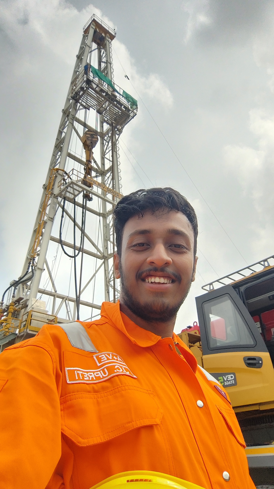
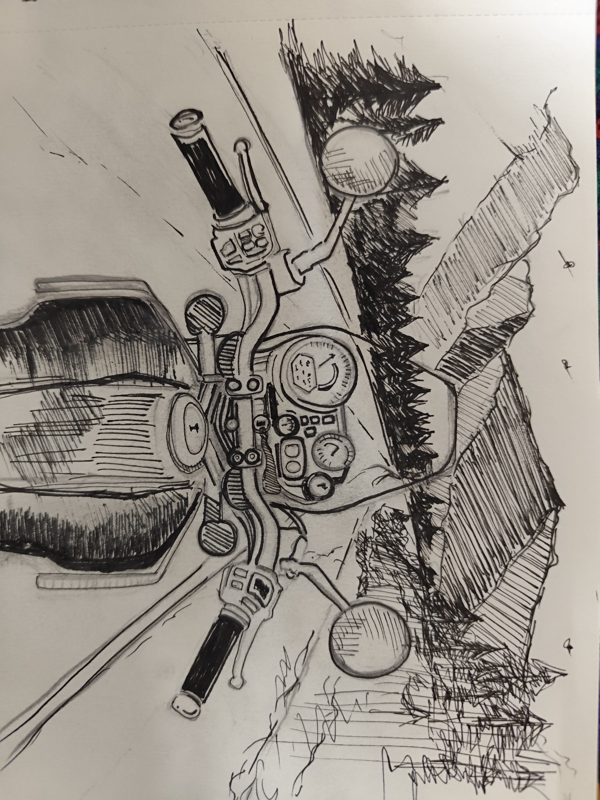

IIT (ISM) Dhanbad, Jadavpur University & Geological Expeditions
[SPACE] Examine
Subsurface Command Center
MINI-GAME: SEISMIC FAULT SNIPER (PETREL WORKSTATION)
MINI-GAME: KILL THE KICK! PRESSURE & CEMENT SQUEEZE HERO
MINI-GAME: OUTCROP HAMMER & LENS SCANNER
MINI-GAME: 24-HOUR SHIFT DODGE (RIG COFFEE URN)
LIVE ACHIEVEMENT & MILESTONE MANAGER [U]
Add a new milestone live! It will immediately spawn a glowing pedestal in the game world, increase your XP, and render in Boss Mode printable CV.
EPMA GEOCHEMISTRY: KIMBERLITE DIAMOND ML CLASSIFIER
AI/SAR SATELLITE DESPECKLING & BASEMENT FAULT ANALYSIS
Structural Findings: Resolves ENE-WSW Narmada-Son lineament sub-surface splays, validating 3D MEM stress orientations and deep crustal fault sealing for drillable prospects in BExB & EPMB blocks.
RIG WALKIE-TALKIE RADIO (VHF CHANNEL 16)
Select Interview Inquiry / Radio Query:
ACRYLIC FINE-ART EXHIBITION: RAJDEEP TARAFDER

Original Acrylic & Mixed-Media Artwork by Rajdeep Tarafder
"Geological interpretation is where empirical physics meets visual pattern recognition. The same eye that drafts canvas art reads complex 3D seismic horizon unconformities and subtle microscopic mineral zoning."
🎒 EXPEDITION BACKPACK & 10-EXPRESSION AVATAR STUDIO [I]
Forged steel head for chipping fresh outcrop faces. Spawns mineral particles and unlocks outcrop samples!
Achromatic hand lens. Detects sub-calcic pyrope garnets, grain textures, and micro-fractures in drill cuttings.
Licensing key for 3D seismic interpretation, Relative Geologic Time (RGT), and prospect generation in BExB & EPMB.
10% Dilute HCl for carbonates + C2Cl4 solvent for direct hydrocarbon fluorescence cut evaluation.
Precision clinometer & compass for strike, dip, rake, and structural lineament measurements.
Triple-strength cardamom brew. Sustains alertness across 12-hour and 24-hour night shift rotations!
Click any expression below to preview the procedural 16-bit artwork, play its 8-bit voice chirp, read its industry lore quote, and set Rajdeep's active mood!
"Subsurface decoded. Target depth locked — Drill here!"
🚨 SCHLUMBERGER PETREL 2024.1: CRITICAL EXCEPTION
Time is 4:59:58 PM on Friday. You have 3 unsaved 3D seismic cubes and 14 BExB/EPMB prospect faults loaded in GPU memory!
Mash [Ctrl + S] or click [RESCUE PROJECT NOW] before Petrel crashes to desktop!
☕ 3 AM RIG DOGHOUSE MASALA CHAI MYSTERY
Total gas telemetry spiked vertically during 8.5" drilling at GDA-A Samastipur! Is it a reservoir gas kick or false alarm?
Inspect the detector intake with your 10x Petrological Loupe [M]!
🔍 False Alarm Solved: Rig chemist boiled cardamom tea directly under the catalytic hydrocarbon sniffer sensor!
+50 XP: Chai Detective unlocked! Expression morphed to 10x LOUPE CYCLOPS!